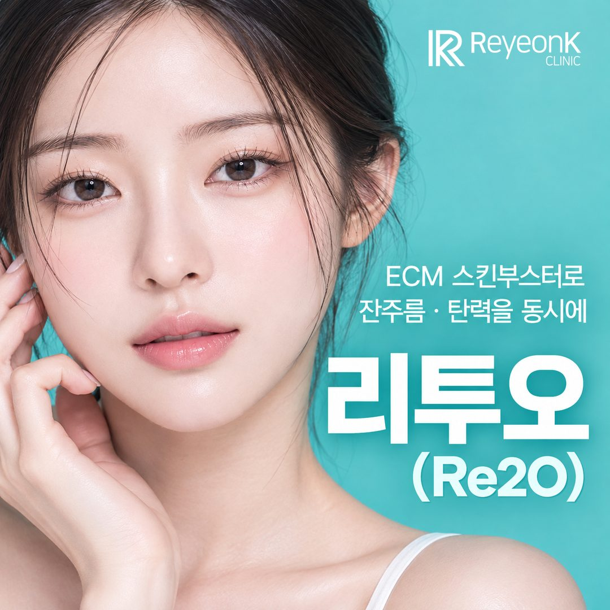
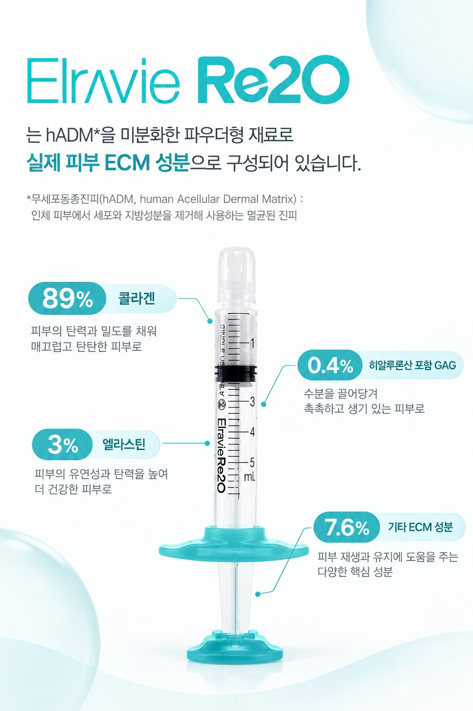
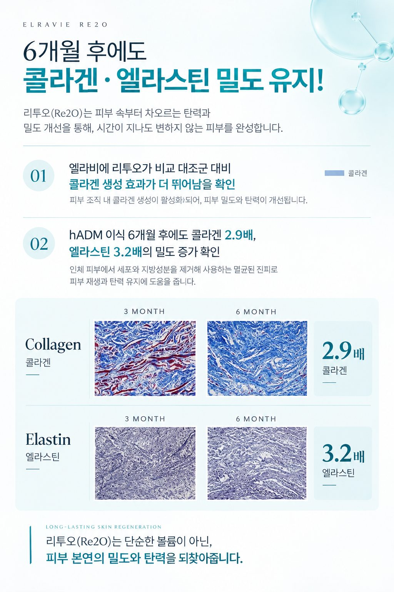
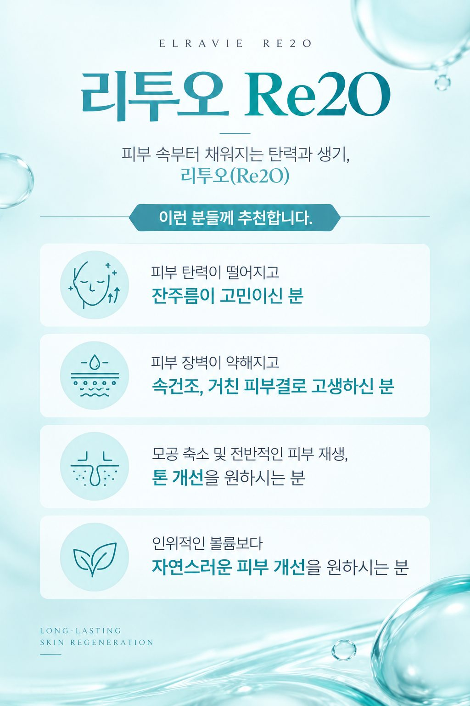
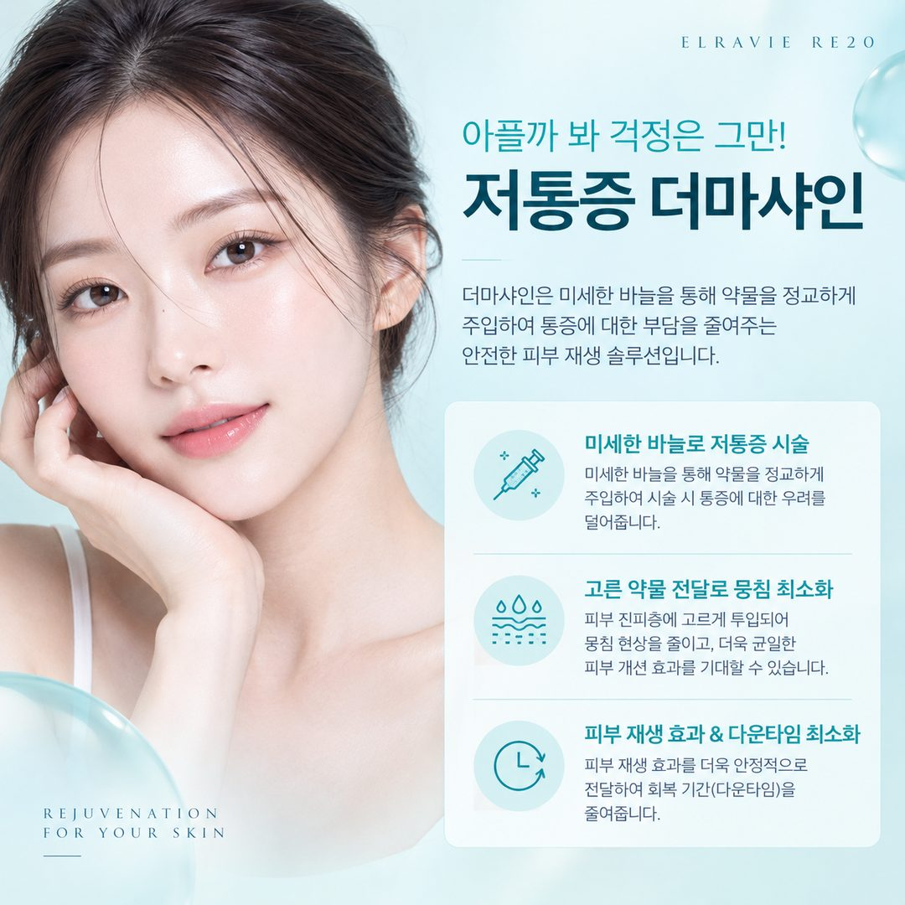
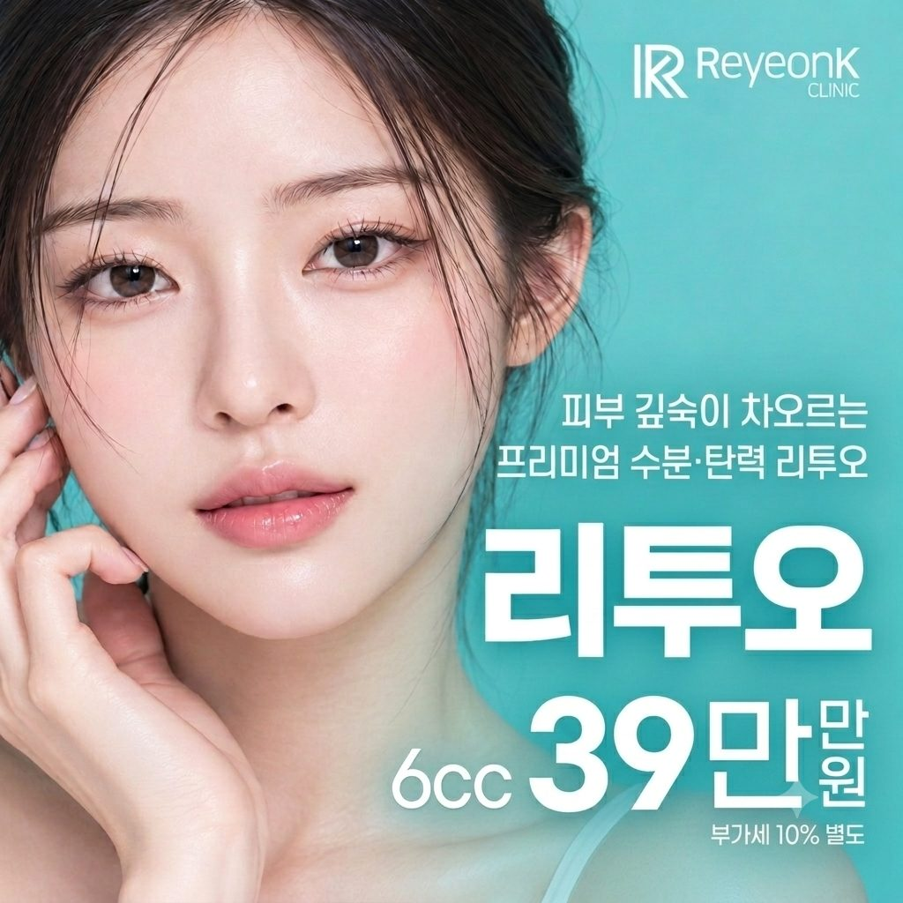

보습 관리를 꾸준히 해도 피부가 푸석하고 탄력이 아쉽게 느껴지시나요?
20~40대 피부는 겉으로 보이는 수분뿐 아니라 진피 속 환경에 따라 결과 탄력이 달라질 수 있어요. 요즘 압구정 피부과에서 많이 문의하시는 스킨부스터 리투오(Re2O)의 원리, 효과, 통증, 가격을 차분히 정리해 드릴게요.

피부는 표면의 수분만으로 탄력과 구조를 유지하는 조직이 아니에요. 진피층에는 콜라겐과 엘라스틴, 그리고 세포 주변의 구조적 환경을 이루는 세포외기질(ECM)이 있고, 이런 요소들이 피부의 형태와 기능을 유지하는 데 관여합니다.
나이가 들거나 자외선 노출이 쌓이면 콜라겐과 엘라스틴의 구조와 배열에 변화가 생길 수 있어요. 그러면 피부결, 탄력, 피부 밀도가 예전 같지 않다고 느껴질 수 있답니다.
다만 피부가 얇아 보이거나 탄력이 떨어졌다고 해서 모두 같은 원인은 아니에요. 피부 장벽 손상, 수분 부족, 지방 분포의 변화 등도 함께 살펴봐야 해요. 그래서 겉으로 드러난 증상만 보기보다 현재 피부 상태와 변화의 원인을 함께 확인하는 과정이 중요합니다.
리투오는 dECM(탈세포화 세포외기질) 기반 소재를 활용하는 스킨부스터 시술이에요. 탈세포화 세포외기질은 조직에서 세포 성분을 제거하고, 세포외기질을 중심으로 남긴 소재를 말해요. 세포외기질은 조직 재생 분야에서도 연구되고 있어요.
표면에 수분을 공급하는 관리와는 접근 방식이 달라서, 진피 환경과 재생 과정에 대한 관심과 함께 주목받고 있습니다.
다만 dECM 기반 소재라는 특성만으로 콜라겐 생성이 얼마나 늘어나는지, 피부 두께나 탄력이 어느 정도 좋아지는지를 단정할 수는 없어요. 실제 결과는 제품의 구성, 사용 방법, 임상 근거, 그리고 개인의 피부 상태에 따라 달라질 수 있습니다.

리투오에 관심 있는 분들은 피부결, 탄력, 피부 밀도 등 여러 부분의 변화를 기대하세요. 하지만 효과를 판단할 때는 광고 문구만으로 결과를 예상하기보다, 제품과 시술 방법에 대한 근거를 함께 확인하는 것이 좋아요.

※ 기대할 수 있는 변화와 한계는 개인의 피부 상태에 따라 다릅니다.

크림과 팩으로 수분 관리는 하는데도 피부가 푸석하고 힘이 없어 보인다면 진피 환경까지 함께 살펴볼 수 있어요.
30대 이후에는 콜라겐과 엘라스틴 등 피부 구조 성분에도 변화가 나타날 수 있어요.
원인이 장벽 손상인지, 수분 부족인지, 탄력 저하인지 먼저 확인하면 나에게 맞는 방향을 찾기 쉬워요.
※ 같은 고민처럼 보여도 필요한 관리는 다를 수 있어서, 시술 여부는 진단 후 의료진과 함께 결정해요.
스킨부스터는 주사로 주입하는 시술이라 따끔함이나 주입할 때의 통증이 있을 수 있어요. 통증 정도는 시술 부위, 주입 방법, 개인의 민감도에 따라 달라집니다.
통증이 걱정되신다면 더마샤인을 추천드려요. 더마샤인은 미세한 바늘로 약물을 정교하게 주입해 통증 부담을 줄여 주는 방식이에요. 손주사보다 통증과 멍이 적은 편이에요.

버츄RF와 포텐자는 고주파 에너지를 이용하는 장비로, 시술 방식과 설정에 따라 피부 조직에 열에너지를 전달해요. 리투오와 함께 고려할 때는 각각의 목적과 역할을 나눠서 이해하는 것이 좋아요.
포텐자·버츄RF는 피부 재생을 자극하고, 리투오 같은 스킨부스터는 피부 속에 성분을 직접 전달하기 때문에 함께 받았을 때 시너지를 기대할 수 있는 경우가 있어요. 다만 병행 여부와 순서는 피부 상태에 따라 달라지니 상담을 통해 정해 주세요.
리투오 가격은 보통 60~80만 원대로 형성되어 있고, 용량(cc)에 따라 차이가 있어요.
| 구분 | 가격 |
|---|---|
| 일반 가격대 | 60~80만원대 |
| 리연케이 첫 방문 이벤트 리투오 6cc (부가세 포함) | 42.9만원 |
FIRST VISIT EVENT
6cc 기준 39만 원에 부가세 10%를 더한 금액이에요. 이벤트 적용 조건과 기간은 변동될 수 있어서 상담 때 정확히 안내해 드려요.

시술을 서두르기보다 충분히 설명을 듣고, 나에게 맞는 관리 방향을 정하시길 바라요.
압구정로데오 피부과에서 리투오를 알아보고 계신다면 시술명이나 가격만 비교하지 마시고, 상담 과정에서 아래 내용을 확인해 보세요.
건조함, 피부결 변화, 탄력 저하 중 어디에 가까운지, 어떤 변화를 기대하는지 편하게 전달해 주세요.
제품의 성분과 허가된 사용 목적, 작용 원리에 관한 근거, 시술 방법을 의료진에게 확인해 보세요.
시술 후 나타날 수 있는 반응과 부작용, 회복 과정까지 함께 들으면 선택이 한결 편해져요.
충분한 상담은 불필요한 시술을 줄이고 내 피부 상태에 맞는 계획을 세우는 데 도움이 돼요. 스킨부스터 종류를 전체적으로 비교해 보고 싶다면 스킨부스터 종류·가격·통증 총정리 글도 함께 참고해 주세요.
탈세포화 세포외기질(dECM) 기반 소재를 활용하는 스킨부스터 시술이에요. 표면 수분 관리와는 접근 방식이 달라 진피 환경에 관심 있는 분들이 많이 문의하세요.
보통 60~80만 원대이고 용량(cc)에 따라 달라요. 리연케이의원 첫 방문 이벤트는 리투오 6cc 42.9만 원(부가세 포함)이에요.
주사 시술이라 따끔함이 있을 수 있어요. 통증은 시술 부위, 주입 방법, 개인 민감도에 따라 다르고, 더마샤인으로 통증 부담을 줄일 수 있어요.
피부결, 탄력, 피부 밀도 등의 변화를 기대하지만 결과는 제품 구성, 사용 방법, 개인의 피부 상태에 따라 달라요. 상담 때 기대할 수 있는 변화와 한계를 함께 확인해 주세요.
두 시술은 목적과 역할이 달라서 함께 받는 경우가 있어요. 병행 여부와 순서는 피부 상태에 따라 달라지니 상담을 통해 정해요.
서두르지 않고, 내 피부를 먼저 살펴보는 것부터 시작해요.
한 가지 시술이 모든 피부 고민을 해결해 주지는 않아요. 리연케이의원에서는 개인의 피부 상태와 고민을 바탕으로 시술의 필요성과 선택지를 편안하게 상담해 드려요.
※ 본 글은 일반적인 정보 제공을 위한 것이며, 시술 효과와 결과는 개인에 따라 다를 수 있습니다. 정확한 진단과 시술 여부는 의료진과의 상담을 통해 결정해 주세요.